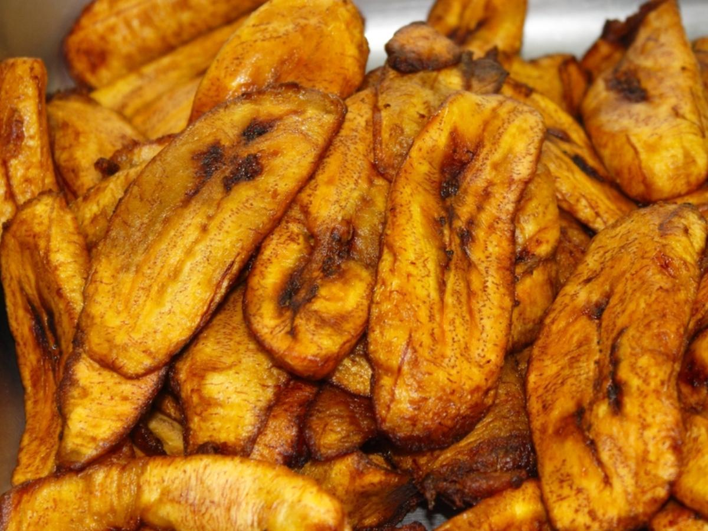

Fried Ripe Plantains Recipe

Image source: eatthismuch.com
Fried ripe plantain is a sweet snack. As the name suggests, it is simply deep-fried ripe plantains. And no! It is not a banana.
Google the differences between plantain and banana.
Like puff-puff, fried ripe plantains can be served with hot pepper sauce and/or beans.
Ingredients
This is a simple dish. Only a couple of ingredients are needed:
- Ripe plantains (as much as you want)
- 2 L vegetable oil or other oil for deep frying
Directions
- Peel the plantains and cut them into slices - see the example in the above image.
- Heat the oil up (medium-high heat) in a deep fryer (or deep pot) till the oil is hot enough for frying.
- Fry the sliced plantains in small batches, according to the size of your deep fryer or pot. Don't fry too many at a time.
- Fry the plantains until light golden brown.
Back to the List of Recipes